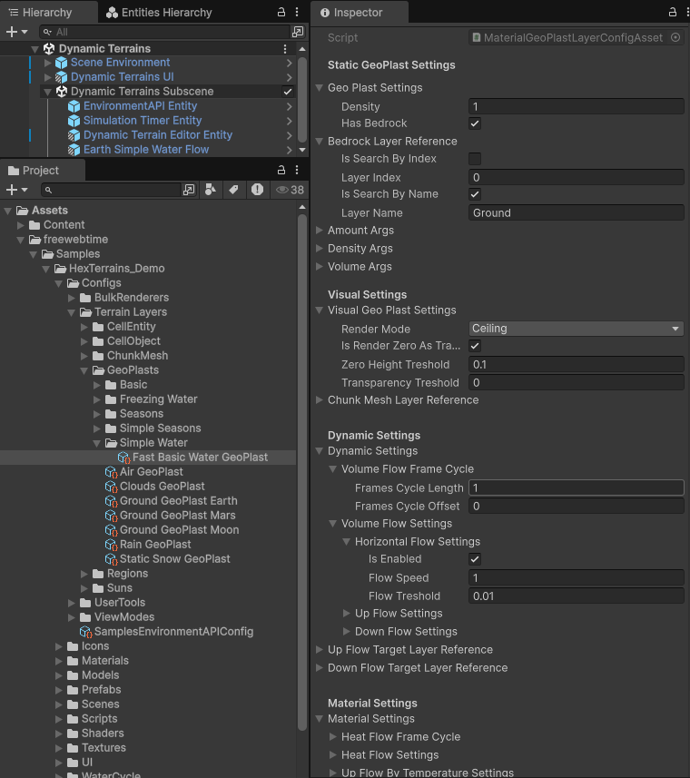
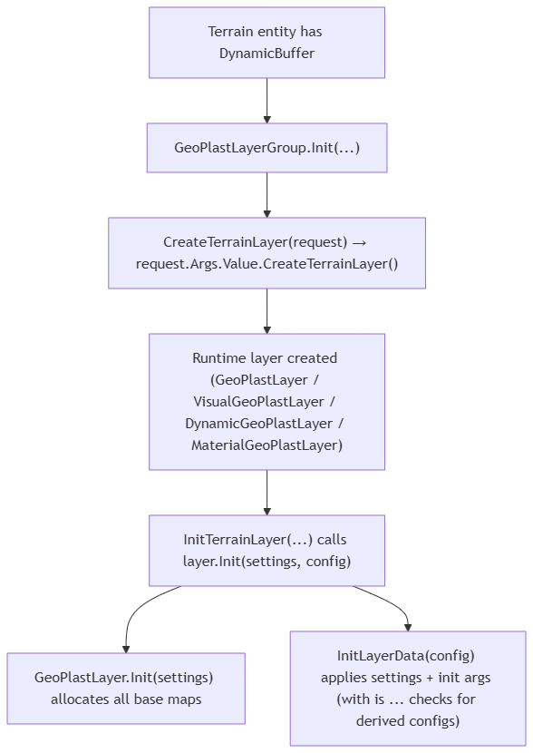

GeoPlastLayer initialization (and GeoPlastLayerConfigAsset inheritance chain)

A GeoPlastLayer is a terrain layer that stores per-cell “plast” data (amount/density/volume) and derives additional maps (bedrock height, ceiling height). Derived GeoPlast layers add rendering and simulation (flow/heat) behavior.
Initialization is driven by ScriptableObject config assets (GeoPlastLayerConfigAsset and its derived types) which are passed to the runtime through CreateGeoPlastLayerRequest elements in a GeoPlastLayerGroup.
Where/how configs are applied at runtime
GeoPlast layers are hosted by GeoPlastLayerGroup : HexTerrainLayerGroup<GeoPlastLayer>.
Instead of passing config assets directly, the group expects init args of type CreateGeoPlastLayerRequest, which contains:
Name(aFixedString128Bytes)Args(aUnityObjectRef<GeoPlastLayerConfigAsset>)
During group initialization:
GeoPlastLayerGroup.CreateTerrainLayer(initArgs):- calls
base.CreateTerrainLayer(initArgs) - if
initArgs is CreateGeoPlastLayerRequest, usesrequest.Nameto setlayer.Name
- calls
GeoPlastLayerGroup.InitTerrainLayer(layer, settings, initArgs):- if
initArgs is CreateGeoPlastLayerRequest args, it calls:layer.Init(settings, args.Args.Value)
- if
The key detail is that args.Args.Value can be any derived asset type (VisualGeoPlastLayerConfigAsset, DynamicGeoPlastLayerConfigAsset, MaterialGeoPlastLayerConfigAsset). Each runtime layer reads the “extra” fields via is IVisualGeoPlastLayerConfig, is IInitDynamicGeoPlastLayerArgs, etc.

flowchart TD
A["Terrain entity has DynamicBuffer<CreateGeoPlastLayerRequest>"] --> B["GeoPlastLayerGroup.Init(...)"]
B --> C["CreateTerrainLayer(request) → request.Args.Value.CreateTerrainLayer()"]
C --> D["Runtime layer created (GeoPlastLayer / VisualGeoPlastLayer / DynamicGeoPlastLayer / MaterialGeoPlastLayer)"]
D --> E["InitTerrainLayer(...) calls layer.Init(settings, config)"]
E --> F["GeoPlastLayer.Init(settings) allocates all base maps"]
E --> G["InitLayerData(config) applies settings + init args (with is ... checks for derived configs)"]
GeoPlastLayer initialization behavior
Stage 1: allocation (GeoPlastLayer.Init(settings))
Always created/initialized (per cell):
AmountMap(ColorMapCellValueDataLayer_Float)DensityMap(ColorMapCellValueDataLayer_Float)VolumeMap(ColorMapCellValueDataLayer_Float)BedrockHeightMap(CellValueDataLayer<float>)CeilingHeightMap(CellValueDataLayer<float>)
Special-case:
- If
GeoPlastSettings.HasBedrock == false,BedrockHeightMapis filled with0duringInit(settings).
Stage 2: config application (GeoPlastLayer.Init(settings, IInitGeoPlastLayerConfig args))
Calls InitLayerData(args), which:
Copies layer-wide settings/references:
GeoPlastSettings = args.GeoPlastSettingsBedrockPlastReference = args.BedrockPlastReference
Initializes value maps using config-provided init args:
InitColoredDataLayer(AmountMap, args.AmountArgs)InitColoredDataLayer(DensityMap, args.DensityArgs)InitColoredDataLayer(VolumeMap, args.VolumeArgs)
Implication:
AmountMap,DensityMap,VolumeMapare authorable initial state. After that, runtime update/simulation may overwrite derived maps (and may recomputeVolumeMapbased on amount+density).
Config assets and how they affect initialization
1) Base config: GeoPlastLayerConfigAsset
Source: com.freewebtime.hexterrains/Runtime/GeoPlasts/Data/GeoPlastLayerConfigAsset.cs
Creates: new GeoPlastLayer()
Implements: IInitGeoPlastLayerConfig
_geoPlastSettings / GeoPlastSettings (GeoPlastSettings)
Affects:
- Bedrock behavior
- If
HasBedrockis false,BedrockHeightMapis initialized to0andCalculateBedrock()becomes a no-op.
- If
- Density math in some derived jobs
- Used by jobs like
CalculateGeoPlastDensityByTemperatureJob(via derived layers), as the “global” geo plast settings input.
- Used by jobs like
Fields inside GeoPlastSettings:
Density
A base density concept for the plast system. (Most of the base layer’s volume calculation usesDensityMapdirectly; temperature-based density uses this as an input in derived logic.)HasBedrock
Enables bedrock-copying behavior and bedrock-based calculations.
_bedrockLayerReference / BedrockPlastReference (HexTerrainLayerReference)
Meaning:
- Points to another
GeoPlastLayerthat acts as bedrock for this layer.
Used by:
GeoPlastLayer.CalculateBedrock():- resolves bedrock layer via
GetTerrainLayerFromParent<GeoPlastLayer>(BedrockPlastReference) - copies bedrock’s
CeilingHeightMapinto this layer’sBedrockHeightMap
- resolves bedrock layer via
Affects:
CalculateCeiling()(ceiling = bedrock height + volume)- Flow potential calculations in dynamic/material layers (they depend on bedrock/ceiling comparisons)
_amountArgs / AmountArgs (InitColorMapCellValueDataLayerArgs<float>)
Used during init:
InitColoredDataLayer(AmountMap, AmountArgs)
Meaning:
- Controls initial plast amount per cell (and its color map configuration).
Practical use:
- Fill with a constant (uniform plast), random range (noise), or apply a source texture.
_densityArgs / DensityArgs (InitColorMapCellValueDataLayerArgs<float>)
Used during init:
InitColoredDataLayer(DensityMap, DensityArgs)
Meaning:
- Controls initial density per cell (units of volume per 1 unit of amount in this layer’s model).
Affects:
CalculateVolume()because volume is computed fromAmountMapandDensityMap.
_volumeArgs / VolumeArgs (InitColorMapCellValueDataLayerArgs<float>)
Used during init:
InitColoredDataLayer(VolumeMap, VolumeArgs)
Meaning:
- Initial volume values (mainly useful as a starting state).
Important:
- Runtime
CalculateVolume()can overwriteVolumeMapwheneverAmountMaporDensityMapis dirty.
2) Visual config: VisualGeoPlastLayerConfigAsset
Source: .../VisualGeoPlastLayerConfigAsset.cs
Creates: new VisualGeoPlastLayer()
Implements: IVisualGeoPlastLayerConfig (extends IInitGeoPlastLayerConfig)
_chunkMeshLayerReference / ChunkMeshLayerReference (HexTerrainLayerReference)
Used during init:
VisualGeoPlastLayer.InitLayerData(...)sets:SurfaceLayerRef = visualArgs.ChunkMeshLayerReference
Used later:
VisualGeoPlastLayer.RenderGeoPlast(...)resolves:ChunkMeshLayer surfaceLayer = chunkMeshLayerList.GetLayer<ChunkMeshLayer>(SurfaceLayerRef)
Meaning:
- Which
ChunkMeshLayerthe GeoPlast values are rendered onto (height/biome/transparency).
_visualGeoPlastSettings / VisualGeoPlastSettings (VisualGeoPlastSettings)
Used during init:
VisualGeoPlastLayer.InitLayerData(...)sets:VisualGeoPlastSettings = visualArgs.VisualGeoPlastSettings
Used later:
RenderGeoPlastToHeightMapJobreadsVisualGeoPlastSettingsto decide how to write height/biome/transparency.
Key fields:
RenderMode(Ceiling,Amount,Volume)- Controls which map is rendered to the surface heightmap:
Amount: usesAmountMapVolume: usesVolumeMapCeiling: usesCeilingHeightMapandVolumeMap
- Controls which map is rendered to the surface heightmap:
IsRenderZeroAsTransparent- If true, “zero-ish” cells become transparent in the target surface’s
TransparencyMap.
- If true, “zero-ish” cells become transparent in the target surface’s
ZeroHeightTreshold- Enforces a minimum height when rendering non-zero values.
TransparencyTreshold- Values at/below this threshold can be treated as transparent (depending on
IsRenderZeroAsTransparent).
- Values at/below this threshold can be treated as transparent (depending on
3) Dynamic config: DynamicGeoPlastLayerConfigAsset
Source: .../DynamicGeoPlastLayerConfigAsset.cs
Creates: new DynamicGeoPlastLayer()
Implements: IInitDynamicGeoPlastLayerArgs (extends IVisualGeoPlastLayerConfig)
_dynamicSettings / DynamicSettings (DynamicGeoPlastSettings)
Used during init:
DynamicGeoPlastLayer.InitLayerData(...)sets:DynamicSettings = dynamicArgs.DynamicSettings
Affects:
- Whether flow simulation runs this tick:
DynamicSettings.IsAnyFlowEnabledAndIsSimulationTick(simulationTimer)
- Which flow types are enabled:
DynamicSettings.VolumeFlowSettings.HorizontalFlowSettings...UpFlowSettings,...DownFlowSettings
Fields inside DynamicGeoPlastSettings:
VolumeFlowFrameCycle(FrameCycleSettings)- Controls simulation frequency (every N frames, with an offset).
VolumeFlowSettings(GeoPlastFlowSettings)- Controls horizontal/up/down flow enablement and speeds (via
DirectionFlowSettings).
- Controls horizontal/up/down flow enablement and speeds (via
_upFlowTargetLayerReference / UpFlowTargetLayerReference (HexTerrainLayerReference)
Used during init:
UpFlowTargetLayerRef = dynamicArgs.UpFlowTargetLayerReference
Used later:
- Vertical flow “up” resolves target via
GetTerrainLayerFromParent<T>(UpFlowTargetLayerRef)
Meaning:
- Which GeoPlast layer receives upward flow from this layer (evaporation/melting-like mechanics depending on implementation).
_downFlowTargetLayerReference / DownFlowTargetLayerReference (HexTerrainLayerReference)
Same idea as up flow, but for downward flow (condensation/freezing-like mechanics depending on implementation).
4) Material config: MaterialGeoPlastLayerConfigAsset
Source: .../MaterialGeoPlastLayerConfigAsset.cs
Creates: new MaterialGeoPlastLayer()
Implements: IInitMaterialGeoPlastLayerArgs (extends IInitDynamicGeoPlastLayerArgs)
_materialSettings / MaterialSettings (MaterialGeoPlastSettings)
Used during init:
MaterialGeoPlastLayer.InitLayerData(...)sets:MaterialSettings = materialArgs.MaterialSettings
Affects:
- Heat flow simulation (frequency + flow settings)
- Temperature-driven vertical flow behavior
- Whether density scales by temperature (
DensityByTemperatureSettings.TemperatureScalesDensity)
Key fields inside MaterialGeoPlastSettings:
HeatFlowFrameCycle(FrameCycleSettings)HeatFlowSettings(GeoPlastFlowSettings)UpFlowByTemperatureSettings/DownFlowByTemperatureSettings(VerticalFlowByTemperatureSettings)- Includes
BaseFlowandFlowMultiplierCurve(ExponentialCurve)
- Includes
DensityByTemperatureSettings(DensityByTemperatureSettings)- Includes
TemperatureScalesDensity,DensityScale,DensityByTemperatureFactorCurve
- Includes
_heatMapArgs / HeatMapArgs (InitColorMapCellValueDataLayerArgs<float>)
Used during init:
InitColoredDataLayer(HeatMap, HeatMapArgs)
Meaning:
- Initial heat amount per cell.
_temperatureMapArgs / TemperatureMapArgs (InitColorMapCellValueDataLayerArgs<float>)
Used during init:
InitColoredDataLayer(TemperatureMap, TemperatureMapArgs)
Meaning:
- Initial temperature per cell.
Note:
MaterialGeoPlastLayer.CalculateTemperature()can recompute temperature fromHeatMapandAmountMaplater when those maps are dirty.
How to use these config assets (typical workflow)
Create the config asset matching the runtime layer you want:
GeoPlastLayerConfigAsset→ static, non-visualVisualGeoPlastLayerConfigAsset→ renders onto aChunkMeshLayerDynamicGeoPlastLayerConfigAsset→ adds volume flow simulationMaterialGeoPlastLayerConfigAsset→ adds heat/temperature + temperature-dependent behavior
Add a
CreateGeoPlastLayerRequestto the terrain entity:Argsmust reference the config asset (stored asUnityObjectRef<GeoPlastLayerConfigAsset>)Nameis optional but recommended (helps debugging/logs)
Ensure referenced layers exist and are resolvable by
HexTerrainLayerReference:BedrockPlastReference(ifHasBedrock)ChunkMeshLayerReference(for visual rendering)UpFlowTargetLayerReference/DownFlowTargetLayerReference(for vertical flow)
Appendix: InitColorMapCellValueDataLayerArgs<float> (what matters at init)
These args control initial values and color map settings for AmountMap, DensityMap, VolumeMap, HeatMap, TemperatureMap.
Common controls:
- Fill modes:
IsFillWithValue+FillValueIsFillWithRandomValues+RandomMinValue/RandomMaxValueIsApplySourceTexture+SourceTexture(+ offset/scale)
- Color map:
ColorPaletteAutoColorMapModeMinValue/MaxValue(used by some auto-color modes)